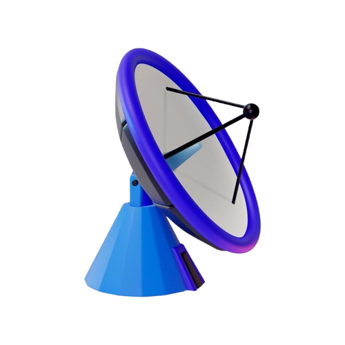

GSRover - Global Solution 2026
Bem-vindo ao futuro da meteorologia e da exploração
A humanidade cada vez mais se aproxima de uma nova era: A era da exploração e colonização espacial, e cabe à novas tecnologias nos guiar para este futuro.
É neste contexto que a prospota GSRover se encaixa, unindo IA e máquina em uma junção projetada para versatilidade, resiliência, e praticidade.
Problema
Atualmente, a comunicação de comandos entre a Terra e Rovers Espaciais chega a ter atrasos que superam os 20 minutos.
A nossa proposta, o GSRover, pretende resolver este problema, utilizando tecnologias modernas de inteligência artificial para implementar funcionalidades especiais.
Tecnologia
A tecnologia usada no GSRover conta com IA integrada, sistema de detecção de tempestades de areia, e sistema de ancoragem.
Além destes, a capacidade de envio de informações sobre tais tempestades traz um diferencial decisivo para operações terráqueas.
Objetivo

O objetivo é não só a agilização de respostas e comandos via IA, é também redefinir como Rovers são usados.
Sua utilidade tanto na Terra quanto em Marte tornam o GSRover um equipamento versátil e completo, além de autosuficiente.
Público-alvo
O projeto foca em estudos climáticos de tempestades de areia e explorações espaciais, tendo como alvo empresas do ramo espacial.
O alvo, adiocionalmente, é uxiliar no estudo climático, permitindo que decisões sejam tomadas com maior rapidez graças à rapidez do GSRover.
Benefícios

Com o uso da IA integrada, o principal benefício do GSRover é a capacidade de comandos imediatos sem intervenção humana.
Adicionalmente, suas capacidades de estudos climáticos podem beneficiar cidades inteiras com suas medições de perigo, mesmo no olho da tempestade.
Aplicação no dia-a-dia
O uso cotidiano, seja na desbravação de um mundo novo, ou para compreender o nosso, são chave para o futuro.
Com sua funcionalidade de análise do ambiente, o GSRover é capaz de prever desastres, protegendo cidades inteiras de catástrofes rápidamente.